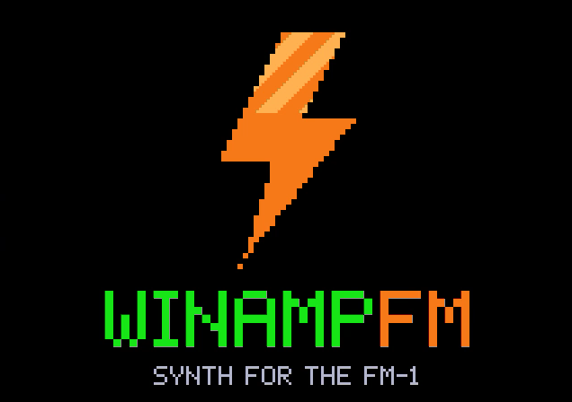

A free firmware for the M-VAVE FM-1. Your sounds as a playlist, four tracks you record as loops, effects on sliders, and a visualizer made of lines. Um firmware gratuito para o M-VAVE FM-1. Seus sons como uma playlist, quatro faixas que você grava em loop, efeitos em sliders e um visualizador feito de linhas.
A 90s remix made live, one track at a time. Every sound was played on the winampFM firmware.Um remix anos 90 feito ao vivo, uma faixa por vez. Todo som foi tocado no firmware winampFM.
The real firmware in your browser. Click the screen to switch it on, then use the buttons, the knobs or your computer keyboard. The DEMOS play by themselves. O firmware de verdade no navegador. Clique na tela para ligar e use os botões, os knobs ou o teclado do computador. As DEMOS tocam sozinhas.
Each clip is the real screen. Next to it: what it is, and the buttons that take you there.Cada clipe é a tela de verdade. Ao lado: o que é e os botões que levam até lá.
Every sound is a song in a Winamp playlist. Scroll it and the sound loads on the track you're on, with its name in the marquee. Cada som é uma música numa playlist do Winamp. Role a lista e o som entra na faixa em que você está, com o nome no letreiro.
Arm REC and play. A reel-to-reel shows the real take: input meter, counter, notes, passes. The bolt turns into a red LED, and the marquee says it really whips the llama's ass. Press REC again and the loop closes, with the tempo taken from what you played. Arme o REC e toque. Um gravador de rolo mostra a gravação de verdade: nível de entrada, contador, notas e passadas. O raio vira um LED vermelho, e o letreiro diz que it really whips the llama's ass. REC de novo fecha o loop, com o tempo tirado do que você tocou.
SEND · SPACE · MASTER, Winamp-style sliders moved by the four knobs. The line above them moves with the sound, and turning up the delay makes it echo. SEND · SPACE · MASTER, sliders do Winamp movidos pelos quatro knobs. A linha acima deles se mexe com o som, e aumentar o delay faz ela ecoar.
Who's on stage: SOLO, DUEL, TRIAD or everyone. Turn on AUTOTURN and the stage changes in time with the song. KEEP holds the lead while the others take turns; YOYO walks the stage across the tracks and back. Quem está no palco: SOLO, DUEL, TRIAD ou todo mundo. Com o AUTOTURN, o palco troca no tempo da música. KEEP segura o lead enquanto os outros se revezam; YOYO anda pelas faixas e volta.
Every sound is a cassette in a PS1-style carousel. Stop on a tape to hear it, then copy it: the sound and its phrase go into your track. Cada som é uma fita num carrossel estilo PS1. Pare numa fita para ouvir e copie: o som e a frase dela vão para a sua faixa.
Pixel art made only of lines, driven by the sound: SCOPE, BARS, MILK, RAYS, TUNNEL. Pixel art feita só de linhas e movida pelo som: SCOPE, BARS, MILK, RAYS, TUNNEL.
All the SLOOP pages stay where they were: steps, mix, performance effects, the song chain. In the menu you'll also find screen brightness. Todas as páginas do SLOOP continuam onde estavam: passos, mix, efeitos de performance, a corrente de músicas. No menu também tem o brilho da tela.
FM-1-transporter. Hold OCT− alone while switching the FM-1 on for the USB rescue.Segure só o OCT− ao ligar o FM-1 para o resgate por USB.
This site uses cookies only for Google Analytics (counting visits and clicks). Nothing is used for ads.Este site usa cookies apenas para o Google Analytics (contar visitas e cliques). Nada é usado para anúncios.